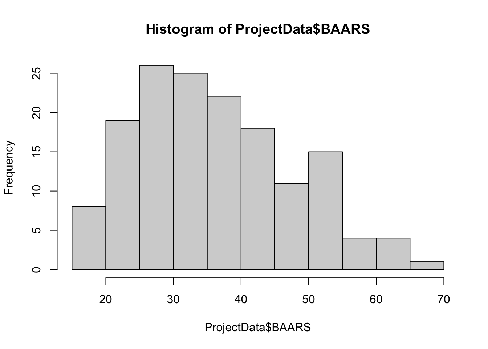
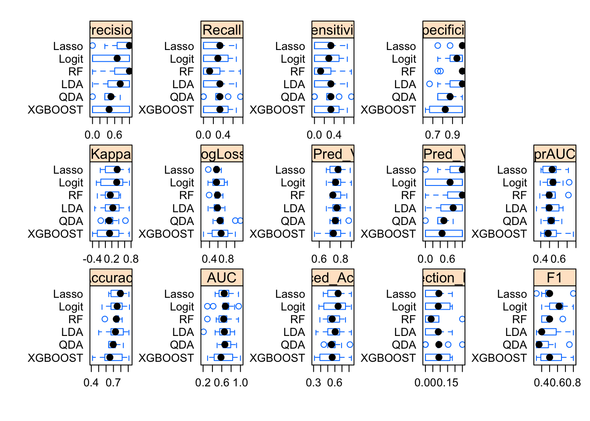
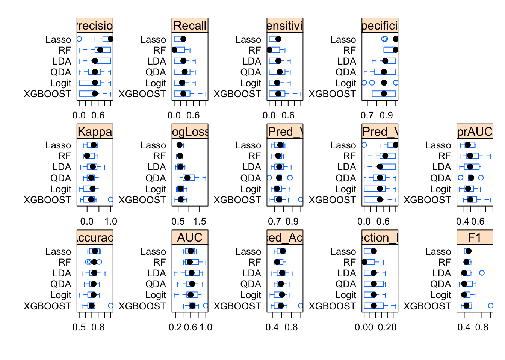
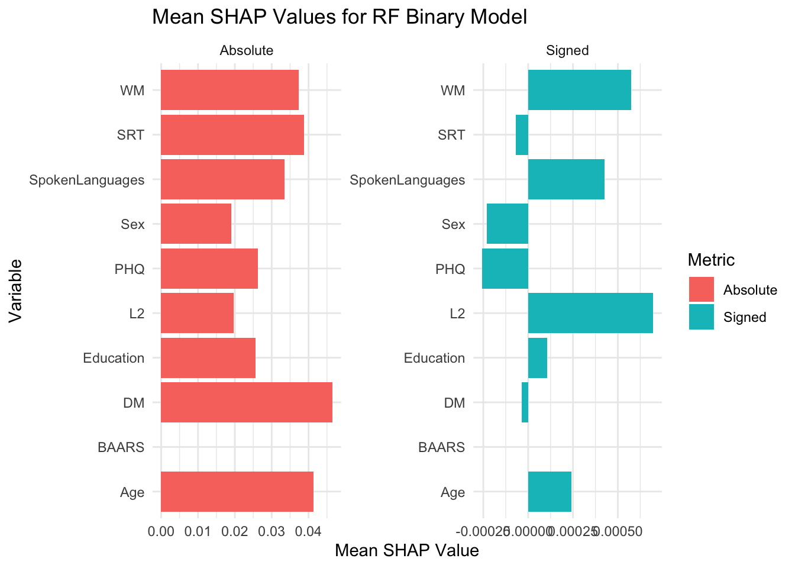

library(readxl)
library(caret)
library(rpart)
library(caretEnsemble)
library(tidyverse)
library(fastshap)
library(readr)
library(data.table)
library(mltools)
library(MLmetrics)
library(conflicted)
library(parallel)
library(doParallel)
library(here)
conflicts_prefer(dplyr::filter)ADHD Diagnosis Predictor
This project aims to answer the following research question: What factors best predict the ADHD diagnosis?
Load Libraries
Set WD, load data, and check the names of the variables from the data set
ProjectData <- read_excel("DataScience_Data.xlsx")
names(ProjectData) [1] "Participant" "Complex" "Simple" "L2"
[5] "SRT" "Declearn" "MLAT" "DM"
[9] "Ospan" "Rspan" "Sspan" "WM"
[13] "BAARS" "ADHD" "PHQ" "Sex"
[17] "Age" "SpokenLanguages" "Education" summary(ProjectData) Participant Complex Simple L2
Min. :4201 Min. :0.0000 Min. :0.1700 Min. :0.2200
1st Qu.:4317 1st Qu.:0.1700 1st Qu.:0.5800 1st Qu.:0.5000
Median :4401 Median :0.3300 Median :0.7500 Median :0.6100
Mean :4407 Mean :0.3552 Mean :0.7141 Mean :0.5948
3rd Qu.:4503 3rd Qu.:0.5000 3rd Qu.:0.9200 3rd Qu.:0.6700
Max. :4603 Max. :1.0000 Max. :1.0000 Max. :1.0000
SRT Declearn MLAT DM
Min. :-0.2000 Min. :-0.140 Min. : 2.00 Min. :-2.489000
1st Qu.: 0.0400 1st Qu.: 1.040 1st Qu.:13.00 1st Qu.:-0.481000
Median : 0.0900 Median : 1.400 Median :17.00 Median : 0.089000
Mean : 0.0851 Mean : 1.307 Mean :16.61 Mean :-0.001092
3rd Qu.: 0.1300 3rd Qu.: 1.680 3rd Qu.:20.00 3rd Qu.: 0.519000
Max. : 0.3700 Max. : 2.850 Max. :24.00 Max. : 1.485000
Ospan Rspan Sspan WM
Min. : 3.00 Min. : 1.00 Min. : 0.00 Min. : 9.00
1st Qu.:19.00 1st Qu.:19.00 1st Qu.:12.00 1st Qu.:51.00
Median :24.00 Median :23.00 Median :16.00 Median :63.00
Mean :22.33 Mean :21.65 Mean :14.88 Mean :58.71
3rd Qu.:28.00 3rd Qu.:27.00 3rd Qu.:19.00 3rd Qu.:69.00
Max. :30.00 Max. :30.00 Max. :24.00 Max. :84.00
NA's :1
BAARS ADHD PHQ Sex
Min. :18.00 Min. :0.0000 Min. : 0.000 Min. :0.0000
1st Qu.:29.00 1st Qu.:0.0000 1st Qu.: 6.000 1st Qu.:0.0000
Median :35.00 Median :0.0000 Median : 9.000 Median :1.0000
Mean :36.75 Mean :0.2876 Mean : 9.778 Mean :0.6993
3rd Qu.:45.00 3rd Qu.:1.0000 3rd Qu.:14.000 3rd Qu.:1.0000
Max. :68.00 Max. :1.0000 Max. :27.000 Max. :2.0000
Age SpokenLanguages Education
Min. :18.00 Min. :1.000 Min. :12.00
1st Qu.:18.00 1st Qu.:2.000 1st Qu.:13.00
Median :19.00 Median :2.000 Median :13.50
Mean :20.08 Mean :2.327 Mean :14.25
3rd Qu.:20.00 3rd Qu.:3.000 3rd Qu.:15.00
Max. :38.00 Max. :5.000 Max. :19.00
hist(ProjectData$BAARS)
#39+ for diagnosis
#Sample Size
ProjectData %>% summarise(n = n())# A tibble: 1 × 1
n
<int>
1 153#Variables to keep
ProjectData.K<-ProjectData %>% select(Participant, L2, SRT, DM, WM, BAARS, ADHD, PHQ, Sex, Age, SpokenLanguages, Education)
summary(ProjectData.K) Participant L2 SRT DM
Min. :4201 Min. :0.2200 Min. :-0.2000 Min. :-2.489000
1st Qu.:4317 1st Qu.:0.5000 1st Qu.: 0.0400 1st Qu.:-0.481000
Median :4401 Median :0.6100 Median : 0.0900 Median : 0.089000
Mean :4407 Mean :0.5948 Mean : 0.0851 Mean :-0.001092
3rd Qu.:4503 3rd Qu.:0.6700 3rd Qu.: 0.1300 3rd Qu.: 0.519000
Max. :4603 Max. :1.0000 Max. : 0.3700 Max. : 1.485000
WM BAARS ADHD PHQ
Min. : 9.00 Min. :18.00 Min. :0.0000 Min. : 0.000
1st Qu.:51.00 1st Qu.:29.00 1st Qu.:0.0000 1st Qu.: 6.000
Median :63.00 Median :35.00 Median :0.0000 Median : 9.000
Mean :58.71 Mean :36.75 Mean :0.2876 Mean : 9.778
3rd Qu.:69.00 3rd Qu.:45.00 3rd Qu.:1.0000 3rd Qu.:14.000
Max. :84.00 Max. :68.00 Max. :1.0000 Max. :27.000
Sex Age SpokenLanguages Education
Min. :0.0000 Min. :18.00 Min. :1.000 Min. :12.00
1st Qu.:0.0000 1st Qu.:18.00 1st Qu.:2.000 1st Qu.:13.00
Median :1.0000 Median :19.00 Median :2.000 Median :13.50
Mean :0.6993 Mean :20.08 Mean :2.327 Mean :14.25
3rd Qu.:1.0000 3rd Qu.:20.00 3rd Qu.:3.000 3rd Qu.:15.00
Max. :2.0000 Max. :38.00 Max. :5.000 Max. :19.00 ProjectData.K$Participant <- as.factor(ProjectData.K$Participant)
ProjectData.K$ADHD[ProjectData.K$ADHD == 1] <- "adhd"
ProjectData.K$ADHD[ProjectData.K$ADHD == 0] <- "no_adhd"
ProjectData.K$ADHD <- as.factor(ProjectData.K$ADHD)
table(ProjectData.K$ADHD)
adhd no_adhd
44 109 Split the data
set.seed(666) # Set seed, so that the model produce the consistent results for reproducibility
# 75% of data will go into training
train_idx <- createDataPartition(ProjectData.K$ADHD, p = 0.75, list = FALSE)
# Create training and test datasets
train_data_ADHD_Status <- ProjectData.K[train_idx, ]
test_data_ADHD_Status <- ProjectData.K[-train_idx, ]
table(train_data_ADHD_Status$ADHD)
adhd no_adhd
33 82 table(test_data_ADHD_Status$ADHD)
adhd no_adhd
11 27 prop.table(table(train_data_ADHD_Status$ADHD))
adhd no_adhd
0.2869565 0.7130435 prop.table(table(test_data_ADHD_Status$ADHD))
adhd no_adhd
0.2894737 0.7105263 ##############################################################
#########Set up all models ###################################
##############################################################
# Set up cross-validation using ROC as the metric
BI_cv_control <- trainControl(
method = "cv", #trained on 9, validated on 1
number = 10, #split data into 10 folds
# summaryFunction = prSummary, # Use caret’s prSummary for binary classification for AUC
# summaryFunction = twoClassSummary, # Use caret’s twoClassSummary for binary classification for ROC metric
# summaryFunction = defaultSummary, # Use caret’s defaultSummary for binary classification for accuracy
summaryFunction = multiClassSummary, # multiClassSummary returns Mean_Balanced_Accuracy
classProbs = TRUE,
allowParallel = TRUE,
savePredictions = "final"
)
# Setup parallel processing
cl <- makePSOCKcluster(detectCores())
registerDoParallel(cl)# Train binary models for group 0 (using base predictors)
models.binary_ADHD_1 <- caretList(
ADHD ~ SRT+DM+WM+PHQ+Sex+Age+Education,
data = train_data_ADHD_Status,
trControl = BI_cv_control,
#metric = "AUC",
metric = "Mean_Balanced_Accuracy",
tuneList = list(
# Logistic regression for binary classification
Logit = caretModelSpec(
method = "glm",
preProcess = c("center", "scale"),
family = "binomial"
),
# Lasso using glmnet with family binomial
Lasso = caretModelSpec(
method = "glmnet",
preProcess = c("center", "scale"),
tuneGrid = expand.grid(alpha = 1, lambda = seq(0.005, 0.1, 0.005)),
family = "binomial"
),
# Linear Discriminant Analysis
LDA = caretModelSpec(
method = "lda",
preProcess = c("center", "scale")
),
# Quadratic Discriminant Analysis
QDA = caretModelSpec(
method = "qda",
preProcess = c("center", "scale")
),
# Random Forest model
RF = caretModelSpec(
method = "rf",
preProcess = c("center", "scale"),
tuneGrid = expand.grid(mtry = seq(1, 10, 1)),
ntree = 1000,
importance = TRUE
),
# XGBoost model for classification
XGBOOST = caretModelSpec(
method = "xgbTree",
preProcess = c("center", "scale"),
verbosity = 0,
tuneGrid = expand.grid(
nrounds = 20,
max_depth = 3,
eta = 0.3,
gamma = seq(0.1, 0.3, 0.05),
colsample_bytree = 1,
min_child_weight = 1,
subsample = seq(0.7, 0.8, 0.05)
)
)
)
)
# Train binary models for group 1 (adding language info)
models.binary_ADHD_2 <- caretList(
ADHD ~ SRT+DM+WM+PHQ+Sex+Age+Education+L2+SpokenLanguages,
data = train_data_ADHD_Status,
trControl = BI_cv_control,
#metric = "AUC",
metric = "Mean_Balanced_Accuracy",
tuneList = list(
# Logistic regression for binary classification
Logit = caretModelSpec(
method = "glm",
preProcess = c("center", "scale"),
family = "binomial"
),
# Lasso using glmnet with family binomial
Lasso = caretModelSpec(
method = "glmnet",
preProcess = c("center", "scale"),
tuneGrid = expand.grid(alpha = 1, lambda = seq(0.005, 0.1, 0.005)),
family = "binomial"
),
# Linear Discriminant Analysis
LDA = caretModelSpec(
method = "lda",
preProcess = c("center", "scale")
),
# Quadratic Discriminant Analysis
QDA = caretModelSpec(
method = "qda",
preProcess = c("center", "scale")
),
# Random Forest model
RF = caretModelSpec(
method = "rf",
preProcess = c("center", "scale"),
tuneGrid = expand.grid(mtry = seq(1, 10, 1)),
ntree = 1000,
importance = TRUE
),
# XGBoost model for classification
XGBOOST = caretModelSpec(
method = "xgbTree",
preProcess = c("center", "scale"),
verbosity = 0,
tuneGrid = expand.grid(
nrounds = 20,
max_depth = 3,
eta = 0.3,
gamma = seq(0.1, 0.3, 0.05),
colsample_bytree = 1,
min_child_weight = 1,
subsample = seq(0.7, 0.8, 0.05)
)
)
)
)
# Train binary models for group 2 (adding BAARS survey)
models.binary_ADHD_3 <- caretList(
ADHD ~ SRT+DM+WM+PHQ+Sex+Age+Education+L2+SpokenLanguages+BAARS,
data = train_data_ADHD_Status,
trControl = BI_cv_control,
#metric = "AUC",
metric = "Mean_Balanced_Accuracy",
tuneList = list(
# Logistic regression for binary classification
Logit = caretModelSpec(
method = "glm",
preProcess = c("center", "scale"),
family = "binomial"
),
# Lasso using glmnet with family binomial
Lasso = caretModelSpec(
method = "glmnet",
preProcess = c("center", "scale"),
tuneGrid = expand.grid(alpha = 1, lambda = seq(0.005, 0.1, 0.005)),
family = "binomial"
),
# Linear Discriminant Analysis
LDA = caretModelSpec(
method = "lda",
preProcess = c("center", "scale")
),
# Quadratic Discriminant Analysis
QDA = caretModelSpec(
method = "qda",
preProcess = c("center", "scale")
),
# Random Forest model
RF = caretModelSpec(
method = "rf",
preProcess = c("center", "scale"),
tuneGrid = expand.grid(mtry = seq(1, 10, 1)),
ntree = 1000,
importance = TRUE
),
# XGBoost model for classification
XGBOOST = caretModelSpec(
method = "xgbTree",
preProcess = c("center", "scale"),
verbosity = 0,
tuneGrid = expand.grid(
nrounds = 20,
max_depth = 3,
eta = 0.3,
gamma = seq(0.1, 0.3, 0.05),
colsample_bytree = 1,
min_child_weight = 1,
subsample = seq(0.7, 0.8, 0.05)
)
)
)
)
# Stop parallel processing when finished
stopCluster(cl)
# Compare resampling results across all binary models
results.binary.ADHD_1 <- resamples(models.binary_ADHD_1)
results.binary.ADHD_2 <- resamples(models.binary_ADHD_2)
results.binary.ADHD_3 <- resamples(models.binary_ADHD_3)
bwplot(results.binary.ADHD_1, scales = list(x = list(relation = "free"), y = list(relation = "free")))
bwplot(results.binary.ADHD_2, scales = list(x = list(relation = "free"), y = list(relation = "free")))
bwplot(results.binary.ADHD_3, scales = list(x = list(relation = "free"), y = list(relation = "free")))
# Helper function to extract confusion matrices for a given model list
extract_CM <- function(model_list, train_data, test_data, response_col) {
# Loop over models in the list and compute confusion matrices
cm_train <- lapply(model_list, function(mod) {
confusionMatrix(
predict(mod, newdata = train_data),
reference = train_data[[response_col]]
)
})
cm_test <- lapply(model_list, function(mod) {
confusionMatrix(
predict(mod, newdata = test_data),
reference = test_data[[response_col]]
)
})
# Return a list containing both training and testing confusion matrices
list(Train = cm_train, Test = cm_test)
}
# Extract confusion matrices for each group
CM.models.binary_ADHD_1 <- extract_CM(models.binary_ADHD_1, train_data_ADHD_Status, test_data_ADHD_Status, "ADHD")
CM.models.binary_ADHD_2 <- extract_CM(models.binary_ADHD_2, train_data_ADHD_Status, test_data_ADHD_Status, "ADHD")
CM.models.binary_ADHD_3 <- extract_CM(models.binary_ADHD_3, train_data_ADHD_Status, test_data_ADHD_Status, "ADHD")
# Optionally, print all confusion matrices for each group and each model
print_confusion_matrices <- function(cm_list, group_name) {
cat("\n--- Confusion Matrices for", group_name, "---\n")
for(model_name in names(cm_list$Train)) {
cat("\nModel:", model_name, "\n")
cat("Training Data:\n")
print(cm_list$Train[[model_name]])
cat("\nTesting Data:\n")
print(cm_list$Test[[model_name]])
cat("\n-------------------------------\n")
}
}
# Print confusion matrices for each group
print_confusion_matrices(CM.models.binary_ADHD_1, "models.binary_ADHD_1")
--- Confusion Matrices for models.binary_ADHD_1 ---
Model: Logit
Training Data:
Confusion Matrix and Statistics
Reference
Prediction adhd no_adhd
adhd 11 7
no_adhd 22 75
Accuracy : 0.7478
95% CI : (0.6583, 0.8242)
No Information Rate : 0.713
P-Value [Acc > NIR] : 0.23754
Kappa : 0.2869
Mcnemar's Test P-Value : 0.00933
Sensitivity : 0.33333
Specificity : 0.91463
Pos Pred Value : 0.61111
Neg Pred Value : 0.77320
Prevalence : 0.28696
Detection Rate : 0.09565
Detection Prevalence : 0.15652
Balanced Accuracy : 0.62398
'Positive' Class : adhd
Testing Data:
Confusion Matrix and Statistics
Reference
Prediction adhd no_adhd
adhd 6 2
no_adhd 5 25
Accuracy : 0.8158
95% CI : (0.6567, 0.9226)
No Information Rate : 0.7105
P-Value [Acc > NIR] : 0.1020
Kappa : 0.5128
Mcnemar's Test P-Value : 0.4497
Sensitivity : 0.5455
Specificity : 0.9259
Pos Pred Value : 0.7500
Neg Pred Value : 0.8333
Prevalence : 0.2895
Detection Rate : 0.1579
Detection Prevalence : 0.2105
Balanced Accuracy : 0.7357
'Positive' Class : adhd
-------------------------------
Model: Lasso
Training Data:
Confusion Matrix and Statistics
Reference
Prediction adhd no_adhd
adhd 9 2
no_adhd 24 80
Accuracy : 0.7739
95% CI : (0.6865, 0.8467)
No Information Rate : 0.713
P-Value [Acc > NIR] : 0.08794
Kappa : 0.3101
Mcnemar's Test P-Value : 3.814e-05
Sensitivity : 0.27273
Specificity : 0.97561
Pos Pred Value : 0.81818
Neg Pred Value : 0.76923
Prevalence : 0.28696
Detection Rate : 0.07826
Detection Prevalence : 0.09565
Balanced Accuracy : 0.62417
'Positive' Class : adhd
Testing Data:
Confusion Matrix and Statistics
Reference
Prediction adhd no_adhd
adhd 3 1
no_adhd 8 26
Accuracy : 0.7632
95% CI : (0.5976, 0.8856)
No Information Rate : 0.7105
P-Value [Acc > NIR] : 0.3025
Kappa : 0.2905
Mcnemar's Test P-Value : 0.0455
Sensitivity : 0.27273
Specificity : 0.96296
Pos Pred Value : 0.75000
Neg Pred Value : 0.76471
Prevalence : 0.28947
Detection Rate : 0.07895
Detection Prevalence : 0.10526
Balanced Accuracy : 0.61785
'Positive' Class : adhd
-------------------------------
Model: LDA
Training Data:
Confusion Matrix and Statistics
Reference
Prediction adhd no_adhd
adhd 12 6
no_adhd 21 76
Accuracy : 0.7652
95% CI : (0.6771, 0.8392)
No Information Rate : 0.713
P-Value [Acc > NIR] : 0.127394
Kappa : 0.3361
Mcnemar's Test P-Value : 0.007054
Sensitivity : 0.3636
Specificity : 0.9268
Pos Pred Value : 0.6667
Neg Pred Value : 0.7835
Prevalence : 0.2870
Detection Rate : 0.1043
Detection Prevalence : 0.1565
Balanced Accuracy : 0.6452
'Positive' Class : adhd
Testing Data:
Confusion Matrix and Statistics
Reference
Prediction adhd no_adhd
adhd 5 2
no_adhd 6 25
Accuracy : 0.7895
95% CI : (0.6268, 0.9045)
No Information Rate : 0.7105
P-Value [Acc > NIR] : 0.1870
Kappa : 0.4264
Mcnemar's Test P-Value : 0.2888
Sensitivity : 0.4545
Specificity : 0.9259
Pos Pred Value : 0.7143
Neg Pred Value : 0.8065
Prevalence : 0.2895
Detection Rate : 0.1316
Detection Prevalence : 0.1842
Balanced Accuracy : 0.6902
'Positive' Class : adhd
-------------------------------
Model: QDA
Training Data:
Confusion Matrix and Statistics
Reference
Prediction adhd no_adhd
adhd 18 6
no_adhd 15 76
Accuracy : 0.8174
95% CI : (0.7345, 0.8833)
No Information Rate : 0.713
P-Value [Acc > NIR] : 0.007019
Kappa : 0.5142
Mcnemar's Test P-Value : 0.080856
Sensitivity : 0.5455
Specificity : 0.9268
Pos Pred Value : 0.7500
Neg Pred Value : 0.8352
Prevalence : 0.2870
Detection Rate : 0.1565
Detection Prevalence : 0.2087
Balanced Accuracy : 0.7361
'Positive' Class : adhd
Testing Data:
Confusion Matrix and Statistics
Reference
Prediction adhd no_adhd
adhd 5 4
no_adhd 6 23
Accuracy : 0.7368
95% CI : (0.569, 0.866)
No Information Rate : 0.7105
P-Value [Acc > NIR] : 0.4389
Kappa : 0.3238
Mcnemar's Test P-Value : 0.7518
Sensitivity : 0.4545
Specificity : 0.8519
Pos Pred Value : 0.5556
Neg Pred Value : 0.7931
Prevalence : 0.2895
Detection Rate : 0.1316
Detection Prevalence : 0.2368
Balanced Accuracy : 0.6532
'Positive' Class : adhd
-------------------------------
Model: RF
Training Data:
Confusion Matrix and Statistics
Reference
Prediction adhd no_adhd
adhd 32 0
no_adhd 1 82
Accuracy : 0.9913
95% CI : (0.9525, 0.9998)
No Information Rate : 0.713
P-Value [Acc > NIR] : 6.068e-16
Kappa : 0.9786
Mcnemar's Test P-Value : 1
Sensitivity : 0.9697
Specificity : 1.0000
Pos Pred Value : 1.0000
Neg Pred Value : 0.9880
Prevalence : 0.2870
Detection Rate : 0.2783
Detection Prevalence : 0.2783
Balanced Accuracy : 0.9848
'Positive' Class : adhd
Testing Data:
Confusion Matrix and Statistics
Reference
Prediction adhd no_adhd
adhd 2 0
no_adhd 9 27
Accuracy : 0.7632
95% CI : (0.5976, 0.8856)
No Information Rate : 0.7105
P-Value [Acc > NIR] : 0.302491
Kappa : 0.24
Mcnemar's Test P-Value : 0.007661
Sensitivity : 0.18182
Specificity : 1.00000
Pos Pred Value : 1.00000
Neg Pred Value : 0.75000
Prevalence : 0.28947
Detection Rate : 0.05263
Detection Prevalence : 0.05263
Balanced Accuracy : 0.59091
'Positive' Class : adhd
-------------------------------
Model: XGBOOST
Training Data:
Confusion Matrix and Statistics
Reference
Prediction adhd no_adhd
adhd 27 1
no_adhd 6 81
Accuracy : 0.9391
95% CI : (0.8786, 0.9752)
No Information Rate : 0.713
P-Value [Acc > NIR] : 1.138e-09
Kappa : 0.8442
Mcnemar's Test P-Value : 0.1306
Sensitivity : 0.8182
Specificity : 0.9878
Pos Pred Value : 0.9643
Neg Pred Value : 0.9310
Prevalence : 0.2870
Detection Rate : 0.2348
Detection Prevalence : 0.2435
Balanced Accuracy : 0.9030
'Positive' Class : adhd
Testing Data:
Confusion Matrix and Statistics
Reference
Prediction adhd no_adhd
adhd 4 8
no_adhd 7 19
Accuracy : 0.6053
95% CI : (0.4339, 0.7596)
No Information Rate : 0.7105
P-Value [Acc > NIR] : 0.9428
Kappa : 0.0656
Mcnemar's Test P-Value : 1.0000
Sensitivity : 0.3636
Specificity : 0.7037
Pos Pred Value : 0.3333
Neg Pred Value : 0.7308
Prevalence : 0.2895
Detection Rate : 0.1053
Detection Prevalence : 0.3158
Balanced Accuracy : 0.5337
'Positive' Class : adhd
-------------------------------print_confusion_matrices(CM.models.binary_ADHD_2, "models.binary_ADHD_2")
--- Confusion Matrices for models.binary_ADHD_2 ---
Model: Logit
Training Data:
Confusion Matrix and Statistics
Reference
Prediction adhd no_adhd
adhd 11 7
no_adhd 22 75
Accuracy : 0.7478
95% CI : (0.6583, 0.8242)
No Information Rate : 0.713
P-Value [Acc > NIR] : 0.23754
Kappa : 0.2869
Mcnemar's Test P-Value : 0.00933
Sensitivity : 0.33333
Specificity : 0.91463
Pos Pred Value : 0.61111
Neg Pred Value : 0.77320
Prevalence : 0.28696
Detection Rate : 0.09565
Detection Prevalence : 0.15652
Balanced Accuracy : 0.62398
'Positive' Class : adhd
Testing Data:
Confusion Matrix and Statistics
Reference
Prediction adhd no_adhd
adhd 6 2
no_adhd 5 25
Accuracy : 0.8158
95% CI : (0.6567, 0.9226)
No Information Rate : 0.7105
P-Value [Acc > NIR] : 0.1020
Kappa : 0.5128
Mcnemar's Test P-Value : 0.4497
Sensitivity : 0.5455
Specificity : 0.9259
Pos Pred Value : 0.7500
Neg Pred Value : 0.8333
Prevalence : 0.2895
Detection Rate : 0.1579
Detection Prevalence : 0.2105
Balanced Accuracy : 0.7357
'Positive' Class : adhd
-------------------------------
Model: Lasso
Training Data:
Confusion Matrix and Statistics
Reference
Prediction adhd no_adhd
adhd 8 2
no_adhd 25 80
Accuracy : 0.7652
95% CI : (0.6771, 0.8392)
No Information Rate : 0.713
P-Value [Acc > NIR] : 0.1274
Kappa : 0.2754
Mcnemar's Test P-Value : 2.297e-05
Sensitivity : 0.24242
Specificity : 0.97561
Pos Pred Value : 0.80000
Neg Pred Value : 0.76190
Prevalence : 0.28696
Detection Rate : 0.06957
Detection Prevalence : 0.08696
Balanced Accuracy : 0.60902
'Positive' Class : adhd
Testing Data:
Confusion Matrix and Statistics
Reference
Prediction adhd no_adhd
adhd 3 0
no_adhd 8 27
Accuracy : 0.7895
95% CI : (0.6268, 0.9045)
No Information Rate : 0.7105
P-Value [Acc > NIR] : 0.18701
Kappa : 0.3476
Mcnemar's Test P-Value : 0.01333
Sensitivity : 0.27273
Specificity : 1.00000
Pos Pred Value : 1.00000
Neg Pred Value : 0.77143
Prevalence : 0.28947
Detection Rate : 0.07895
Detection Prevalence : 0.07895
Balanced Accuracy : 0.63636
'Positive' Class : adhd
-------------------------------
Model: LDA
Training Data:
Confusion Matrix and Statistics
Reference
Prediction adhd no_adhd
adhd 11 4
no_adhd 22 78
Accuracy : 0.7739
95% CI : (0.6865, 0.8467)
No Information Rate : 0.713
P-Value [Acc > NIR] : 0.0879394
Kappa : 0.34
Mcnemar's Test P-Value : 0.0008561
Sensitivity : 0.33333
Specificity : 0.95122
Pos Pred Value : 0.73333
Neg Pred Value : 0.78000
Prevalence : 0.28696
Detection Rate : 0.09565
Detection Prevalence : 0.13043
Balanced Accuracy : 0.64228
'Positive' Class : adhd
Testing Data:
Confusion Matrix and Statistics
Reference
Prediction adhd no_adhd
adhd 6 2
no_adhd 5 25
Accuracy : 0.8158
95% CI : (0.6567, 0.9226)
No Information Rate : 0.7105
P-Value [Acc > NIR] : 0.1020
Kappa : 0.5128
Mcnemar's Test P-Value : 0.4497
Sensitivity : 0.5455
Specificity : 0.9259
Pos Pred Value : 0.7500
Neg Pred Value : 0.8333
Prevalence : 0.2895
Detection Rate : 0.1579
Detection Prevalence : 0.2105
Balanced Accuracy : 0.7357
'Positive' Class : adhd
-------------------------------
Model: QDA
Training Data:
Confusion Matrix and Statistics
Reference
Prediction adhd no_adhd
adhd 20 5
no_adhd 13 77
Accuracy : 0.8435
95% CI : (0.764, 0.9045)
No Information Rate : 0.713
P-Value [Acc > NIR] : 0.0008276
Kappa : 0.5876
Mcnemar's Test P-Value : 0.0989602
Sensitivity : 0.6061
Specificity : 0.9390
Pos Pred Value : 0.8000
Neg Pred Value : 0.8556
Prevalence : 0.2870
Detection Rate : 0.1739
Detection Prevalence : 0.2174
Balanced Accuracy : 0.7725
'Positive' Class : adhd
Testing Data:
Confusion Matrix and Statistics
Reference
Prediction adhd no_adhd
adhd 5 3
no_adhd 6 24
Accuracy : 0.7632
95% CI : (0.5976, 0.8856)
No Information Rate : 0.7105
P-Value [Acc > NIR] : 0.3025
Kappa : 0.3736
Mcnemar's Test P-Value : 0.5050
Sensitivity : 0.4545
Specificity : 0.8889
Pos Pred Value : 0.6250
Neg Pred Value : 0.8000
Prevalence : 0.2895
Detection Rate : 0.1316
Detection Prevalence : 0.2105
Balanced Accuracy : 0.6717
'Positive' Class : adhd
-------------------------------
Model: RF
Training Data:
Confusion Matrix and Statistics
Reference
Prediction adhd no_adhd
adhd 33 0
no_adhd 0 82
Accuracy : 1
95% CI : (0.9684, 1)
No Information Rate : 0.713
P-Value [Acc > NIR] : < 2.2e-16
Kappa : 1
Mcnemar's Test P-Value : NA
Sensitivity : 1.000
Specificity : 1.000
Pos Pred Value : 1.000
Neg Pred Value : 1.000
Prevalence : 0.287
Detection Rate : 0.287
Detection Prevalence : 0.287
Balanced Accuracy : 1.000
'Positive' Class : adhd
Testing Data:
Confusion Matrix and Statistics
Reference
Prediction adhd no_adhd
adhd 1 1
no_adhd 10 26
Accuracy : 0.7105
95% CI : (0.541, 0.8458)
No Information Rate : 0.7105
P-Value [Acc > NIR] : 0.58043
Kappa : 0.0711
Mcnemar's Test P-Value : 0.01586
Sensitivity : 0.09091
Specificity : 0.96296
Pos Pred Value : 0.50000
Neg Pred Value : 0.72222
Prevalence : 0.28947
Detection Rate : 0.02632
Detection Prevalence : 0.05263
Balanced Accuracy : 0.52694
'Positive' Class : adhd
-------------------------------
Model: XGBOOST
Training Data:
Confusion Matrix and Statistics
Reference
Prediction adhd no_adhd
adhd 26 3
no_adhd 7 79
Accuracy : 0.913
95% CI : (0.8459, 0.9575)
No Information Rate : 0.713
P-Value [Acc > NIR] : 1.379e-07
Kappa : 0.7795
Mcnemar's Test P-Value : 0.3428
Sensitivity : 0.7879
Specificity : 0.9634
Pos Pred Value : 0.8966
Neg Pred Value : 0.9186
Prevalence : 0.2870
Detection Rate : 0.2261
Detection Prevalence : 0.2522
Balanced Accuracy : 0.8756
'Positive' Class : adhd
Testing Data:
Confusion Matrix and Statistics
Reference
Prediction adhd no_adhd
adhd 5 6
no_adhd 6 21
Accuracy : 0.6842
95% CI : (0.5135, 0.825)
No Information Rate : 0.7105
P-Value [Acc > NIR] : 0.7101
Kappa : 0.2323
Mcnemar's Test P-Value : 1.0000
Sensitivity : 0.4545
Specificity : 0.7778
Pos Pred Value : 0.4545
Neg Pred Value : 0.7778
Prevalence : 0.2895
Detection Rate : 0.1316
Detection Prevalence : 0.2895
Balanced Accuracy : 0.6162
'Positive' Class : adhd
-------------------------------print_confusion_matrices(CM.models.binary_ADHD_3, "models.binary_ADHD_3")
--- Confusion Matrices for models.binary_ADHD_3 ---
Model: Logit
Training Data:
Confusion Matrix and Statistics
Reference
Prediction adhd no_adhd
adhd 21 4
no_adhd 12 78
Accuracy : 0.8609
95% CI : (0.7839, 0.9183)
No Information Rate : 0.713
P-Value [Acc > NIR] : 0.0001471
Kappa : 0.6335
Mcnemar's Test P-Value : 0.0801183
Sensitivity : 0.6364
Specificity : 0.9512
Pos Pred Value : 0.8400
Neg Pred Value : 0.8667
Prevalence : 0.2870
Detection Rate : 0.1826
Detection Prevalence : 0.2174
Balanced Accuracy : 0.7938
'Positive' Class : adhd
Testing Data:
Confusion Matrix and Statistics
Reference
Prediction adhd no_adhd
adhd 8 6
no_adhd 3 21
Accuracy : 0.7632
95% CI : (0.5976, 0.8856)
No Information Rate : 0.7105
P-Value [Acc > NIR] : 0.3025
Kappa : 0.4673
Mcnemar's Test P-Value : 0.5050
Sensitivity : 0.7273
Specificity : 0.7778
Pos Pred Value : 0.5714
Neg Pred Value : 0.8750
Prevalence : 0.2895
Detection Rate : 0.2105
Detection Prevalence : 0.3684
Balanced Accuracy : 0.7525
'Positive' Class : adhd
-------------------------------
Model: Lasso
Training Data:
Confusion Matrix and Statistics
Reference
Prediction adhd no_adhd
adhd 18 5
no_adhd 15 77
Accuracy : 0.8261
95% CI : (0.7443, 0.8904)
No Information Rate : 0.713
P-Value [Acc > NIR] : 0.003642
Kappa : 0.5327
Mcnemar's Test P-Value : 0.044171
Sensitivity : 0.5455
Specificity : 0.9390
Pos Pred Value : 0.7826
Neg Pred Value : 0.8370
Prevalence : 0.2870
Detection Rate : 0.1565
Detection Prevalence : 0.2000
Balanced Accuracy : 0.7422
'Positive' Class : adhd
Testing Data:
Confusion Matrix and Statistics
Reference
Prediction adhd no_adhd
adhd 9 5
no_adhd 2 22
Accuracy : 0.8158
95% CI : (0.6567, 0.9226)
No Information Rate : 0.7105
P-Value [Acc > NIR] : 0.1020
Kappa : 0.5857
Mcnemar's Test P-Value : 0.4497
Sensitivity : 0.8182
Specificity : 0.8148
Pos Pred Value : 0.6429
Neg Pred Value : 0.9167
Prevalence : 0.2895
Detection Rate : 0.2368
Detection Prevalence : 0.3684
Balanced Accuracy : 0.8165
'Positive' Class : adhd
-------------------------------
Model: LDA
Training Data:
Confusion Matrix and Statistics
Reference
Prediction adhd no_adhd
adhd 20 3
no_adhd 13 79
Accuracy : 0.8609
95% CI : (0.7839, 0.9183)
No Information Rate : 0.713
P-Value [Acc > NIR] : 0.0001471
Kappa : 0.6262
Mcnemar's Test P-Value : 0.0244489
Sensitivity : 0.6061
Specificity : 0.9634
Pos Pred Value : 0.8696
Neg Pred Value : 0.8587
Prevalence : 0.2870
Detection Rate : 0.1739
Detection Prevalence : 0.2000
Balanced Accuracy : 0.7847
'Positive' Class : adhd
Testing Data:
Confusion Matrix and Statistics
Reference
Prediction adhd no_adhd
adhd 8 5
no_adhd 3 22
Accuracy : 0.7895
95% CI : (0.6268, 0.9045)
No Information Rate : 0.7105
P-Value [Acc > NIR] : 0.1870
Kappa : 0.5144
Mcnemar's Test P-Value : 0.7237
Sensitivity : 0.7273
Specificity : 0.8148
Pos Pred Value : 0.6154
Neg Pred Value : 0.8800
Prevalence : 0.2895
Detection Rate : 0.2105
Detection Prevalence : 0.3421
Balanced Accuracy : 0.7710
'Positive' Class : adhd
-------------------------------
Model: QDA
Training Data:
Confusion Matrix and Statistics
Reference
Prediction adhd no_adhd
adhd 24 5
no_adhd 9 77
Accuracy : 0.8783
95% CI : (0.8042, 0.9318)
No Information Rate : 0.713
P-Value [Acc > NIR] : 1.988e-05
Kappa : 0.6913
Mcnemar's Test P-Value : 0.4227
Sensitivity : 0.7273
Specificity : 0.9390
Pos Pred Value : 0.8276
Neg Pred Value : 0.8953
Prevalence : 0.2870
Detection Rate : 0.2087
Detection Prevalence : 0.2522
Balanced Accuracy : 0.8331
'Positive' Class : adhd
Testing Data:
Confusion Matrix and Statistics
Reference
Prediction adhd no_adhd
adhd 7 6
no_adhd 4 21
Accuracy : 0.7368
95% CI : (0.569, 0.866)
No Information Rate : 0.7105
P-Value [Acc > NIR] : 0.4389
Kappa : 0.393
Mcnemar's Test P-Value : 0.7518
Sensitivity : 0.6364
Specificity : 0.7778
Pos Pred Value : 0.5385
Neg Pred Value : 0.8400
Prevalence : 0.2895
Detection Rate : 0.1842
Detection Prevalence : 0.3421
Balanced Accuracy : 0.7071
'Positive' Class : adhd
-------------------------------
Model: RF
Training Data:
Confusion Matrix and Statistics
Reference
Prediction adhd no_adhd
adhd 33 0
no_adhd 0 82
Accuracy : 1
95% CI : (0.9684, 1)
No Information Rate : 0.713
P-Value [Acc > NIR] : < 2.2e-16
Kappa : 1
Mcnemar's Test P-Value : NA
Sensitivity : 1.000
Specificity : 1.000
Pos Pred Value : 1.000
Neg Pred Value : 1.000
Prevalence : 0.287
Detection Rate : 0.287
Detection Prevalence : 0.287
Balanced Accuracy : 1.000
'Positive' Class : adhd
Testing Data:
Confusion Matrix and Statistics
Reference
Prediction adhd no_adhd
adhd 7 4
no_adhd 4 23
Accuracy : 0.7895
95% CI : (0.6268, 0.9045)
No Information Rate : 0.7105
P-Value [Acc > NIR] : 0.187
Kappa : 0.4882
Mcnemar's Test P-Value : 1.000
Sensitivity : 0.6364
Specificity : 0.8519
Pos Pred Value : 0.6364
Neg Pred Value : 0.8519
Prevalence : 0.2895
Detection Rate : 0.1842
Detection Prevalence : 0.2895
Balanced Accuracy : 0.7441
'Positive' Class : adhd
-------------------------------
Model: XGBOOST
Training Data:
Confusion Matrix and Statistics
Reference
Prediction adhd no_adhd
adhd 30 0
no_adhd 3 82
Accuracy : 0.9739
95% CI : (0.9257, 0.9946)
No Information Rate : 0.713
P-Value [Acc > NIR] : 2.208e-13
Kappa : 0.9345
Mcnemar's Test P-Value : 0.2482
Sensitivity : 0.9091
Specificity : 1.0000
Pos Pred Value : 1.0000
Neg Pred Value : 0.9647
Prevalence : 0.2870
Detection Rate : 0.2609
Detection Prevalence : 0.2609
Balanced Accuracy : 0.9545
'Positive' Class : adhd
Testing Data:
Confusion Matrix and Statistics
Reference
Prediction adhd no_adhd
adhd 9 6
no_adhd 2 21
Accuracy : 0.7895
95% CI : (0.6268, 0.9045)
No Information Rate : 0.7105
P-Value [Acc > NIR] : 0.1870
Kappa : 0.538
Mcnemar's Test P-Value : 0.2888
Sensitivity : 0.8182
Specificity : 0.7778
Pos Pred Value : 0.6000
Neg Pred Value : 0.9130
Prevalence : 0.2895
Detection Rate : 0.2368
Detection Prevalence : 0.3947
Balanced Accuracy : 0.7980
'Positive' Class : adhd
-------------------------------#confusion matrix for RF only
#CM.models.binary_ADHD_3$Train$RF
#CM.models.binary_ADHD_3$Test$RF
#RF seems the winner (I do not think that Alex agreed here).
# Updated helper function to compute Mean_Balanced_Accuracy using multiClassSummary
calc_balacc <- function(mod, truth, newdata) {
# Get predicted probabilities and predicted class labels
prob <- predict(mod, newdata = newdata, type = "prob")
pred <- predict(mod, newdata = newdata)
# Build a data frame with observed values, predictions, and probabilities.
# The column names in 'prob' must match the levels in the response factor.
df <- data.frame(obs = truth,
pred = pred,
prob)
# multiClassSummary computes several metrics including Mean_Balanced_Accuracy.
# Note: Even in binary classification, it returns "Mean_Balanced_Accuracy".
metrics <- multiClassSummary(df, lev = levels(truth), model = mod)
metrics["Balanced_Accuracy"]
}
# Updated evaluation function that computes balanced accuracy on train and test sets
evaluate_models_balacc <- function(model_list, train_data, test_data, response_col) {
train_balacc <- sapply(model_list, function(mod)
calc_balacc(mod, truth = train_data[[response_col]], newdata = train_data))
test_balacc <- sapply(model_list, function(mod)
calc_balacc(mod, truth = test_data[[response_col]], newdata = test_data))
data.frame(
Model = names(model_list),
Train_BalAcc = train_balacc,
Test_BalAcc = test_balacc,
Diff = train_balacc - test_balacc,
row.names = NULL
)
}
# Example usage for group 1 and group 2 binary models
BI_results1 <- evaluate_models_balacc(
model_list = models.binary_ADHD_1,
train_data = train_data_ADHD_Status,
test_data = test_data_ADHD_Status,
response_col = "ADHD"
)
BI_results2 <- evaluate_models_balacc(
model_list = models.binary_ADHD_2,
train_data = train_data_ADHD_Status,
test_data = test_data_ADHD_Status,
response_col = "ADHD"
)
BI_results3 <- evaluate_models_balacc(
model_list = models.binary_ADHD_3,
train_data = train_data_ADHD_Status,
test_data = test_data_ADHD_Status,
response_col = "ADHD"
)
# Combine the results from the two groups for comparison
BI_results1$Set <- "No L2"
BI_results2$Set <- "With L2"
BI_results3$Set <- "BAARS"
BI_results_all <- rbind(BI_results1, BI_results2, BI_results3)
# Print the combined balanced accuracy results
BI_results_all Model Train_BalAcc Test_BalAcc Diff Set
1 Logit 0.6239837 0.7356902 -0.111706496 No L2
2 Lasso 0.6241685 0.6178451 0.006323397 No L2
3 LDA 0.6452328 0.6902357 -0.045002874 No L2
4 QDA 0.7361419 0.6531987 0.082943254 No L2
5 RF 0.9848485 0.5909091 0.393939394 No L2
6 XGBOOST 0.9029933 0.5336700 0.369323314 No L2
7 Logit 0.6239837 0.7356902 -0.111706496 With L2
8 Lasso 0.6090170 0.6363636 -0.027346637 With L2
9 LDA 0.6422764 0.7356902 -0.093413813 With L2
10 QDA 0.7725425 0.6717172 0.100825326 With L2
11 RF 1.0000000 0.5269360 0.473063973 With L2
12 XGBOOST 0.8756467 0.6161616 0.259485095 With L2
13 Logit 0.7937916 0.7525253 0.041266322 BAARS
14 Lasso 0.7422395 0.8164983 -0.074258849 BAARS
15 LDA 0.7847376 0.7710438 0.013693849 BAARS
16 QDA 0.8331486 0.7070707 0.126077852 BAARS
17 RF 1.0000000 0.7441077 0.255892256 BAARS
18 XGBOOST 0.9545455 0.7979798 0.156565657 BAARS### SHAP Values for RF
# Create a character vector with the names of your selected predictors
selected_vars <- c("L2", "SRT", "DM", "WM", "PHQ", "Sex", "Age",
"SpokenLanguages", "Education", "BAARS")
# Subset the training data for SHAP analysis
BI_X_train <- ProjectData[, selected_vars]
# For binary classification, define a prediction wrapper that returns probabilities for the positive class.
predict_prob_BI <- function(model, newdata) {
prob <- predict(model, newdata = newdata, type = "prob")
prob[, 2]
}
# Compute SHAP values using fastshap for one of the QDR models
set.seed(123) # For reproducibility
BI_shap_vals_RF <- fastshap::explain(
object = models.binary_ADHD_2$RF,
X = BI_X_train,
pred_wrapper = predict_prob_BI,
nsim = 50
)
# Calculate Signed and Absolute Mean SHAP values for each predictor
BI_signed_mean_RF <- colMeans(BI_shap_vals_RF)
BI_abs_mean_RF <- colMeans(abs(BI_shap_vals_RF))
# Combine the SHAP means into a data frame for plotting.
df_BI_shap_means <- data.frame(
Variable = names(BI_signed_mean_RF),
Signed = BI_signed_mean_RF,
Absolute = BI_abs_mean_RF
)
# Convert to long format for ggplot.
df_BI_shap_long <- df_BI_shap_means %>%
pivot_longer(cols = c(Signed, Absolute),
names_to = "Metric",
values_to = "Mean_SHAP")
# Create a bar plot of the mean SHAP values.
Shap_Means_BI <- ggplot(df_BI_shap_long, aes(x = Variable, y = Mean_SHAP, fill = Metric)) +
facet_wrap(~ Metric, scales = "free") +
geom_bar(stat = "identity", position = "dodge") +
labs(title = "Mean SHAP Values for RF Binary Model",
x = "Variable",
y = "Mean SHAP Value") +
coord_flip() +
theme_minimal()
Shap_Means_BI